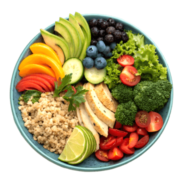

01
Steady energy
Balanced meals can help you feel more consistently fuelled through study, work, movement, and rest.
Healthy food
Simple, balanced choices can support your energy, focus, mood, and long-term wellbeing without taking the joy out of eating.
The basics
Food gives your body the energy and nutrients it needs to move, think, recover, and connect with the people around you. A healthy way of eating can include familiar favourites, shared meals, and room for flexibility.
Small, nourishing choices add up. Start with what is realistic for your life today, then build from there.
Why your plate matters
Balanced meals can help you feel more consistently fuelled through study, work, movement, and rest.
Regular nourishment gives your brain the dependable fuel it needs for attention and clear thinking.
Fruit, vegetables, protein, and whole grains provide nutrients that support your everyday health.
Eating regularly and enjoying food can support the connection between physical and emotional wellbeing.
There is no single perfect menu. Variety, consistency, and enjoyment are useful guides.
A simple guide
Use these building blocks as a flexible starting point. You can adapt them to your culture, budget, preferences, and schedule.

Simple food, thoughtfully chosenChoose vegetables or fruit for fibre, flavour, and everyday nutrients.
Pair whole grains or other carbohydrates with a protein you enjoy.
Seeds, nuts, avocado, and oils can add flavour and help meals feel satisfying.
Balance is flexible. Food can be practical, social, celebratory, and comforting.
Everyday habits
Prepare fruit, yoghurt, nuts, leftovers, or easy vegetables where you can see them when hunger arrives.
Choosing one meal or snack in advance can reduce pressure when the day becomes busy.
Keep water within reach and notice when tiredness or thirst may be asking for a pause.

A kinder approach
Healthy eating is not a test you pass or fail. Notice what helps you feel well, be curious about your choices, and ask a health professional for personalised advice when you need it.